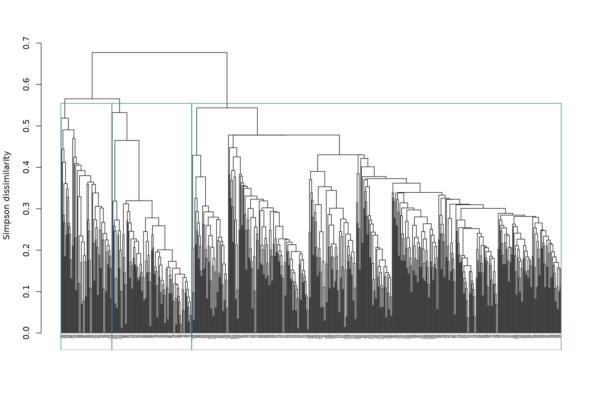
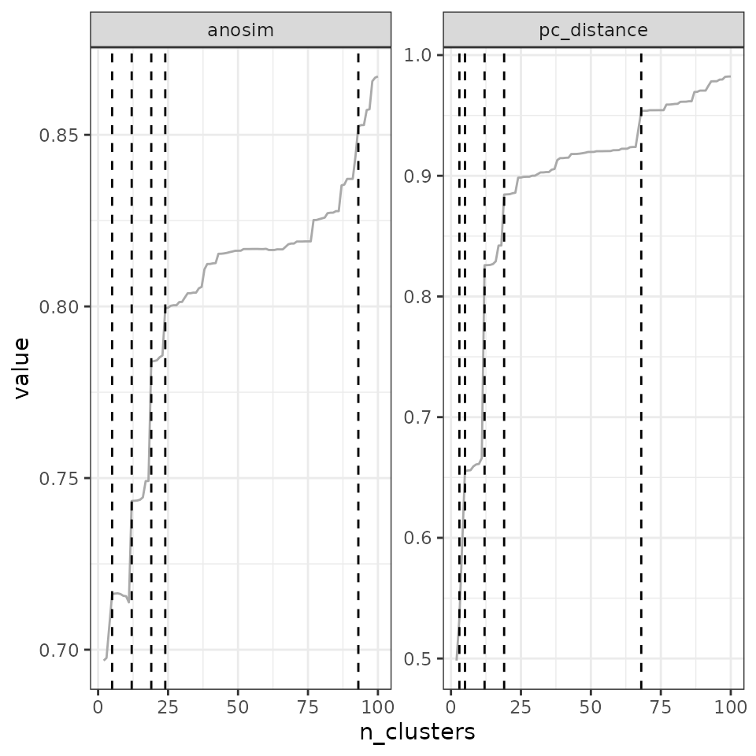
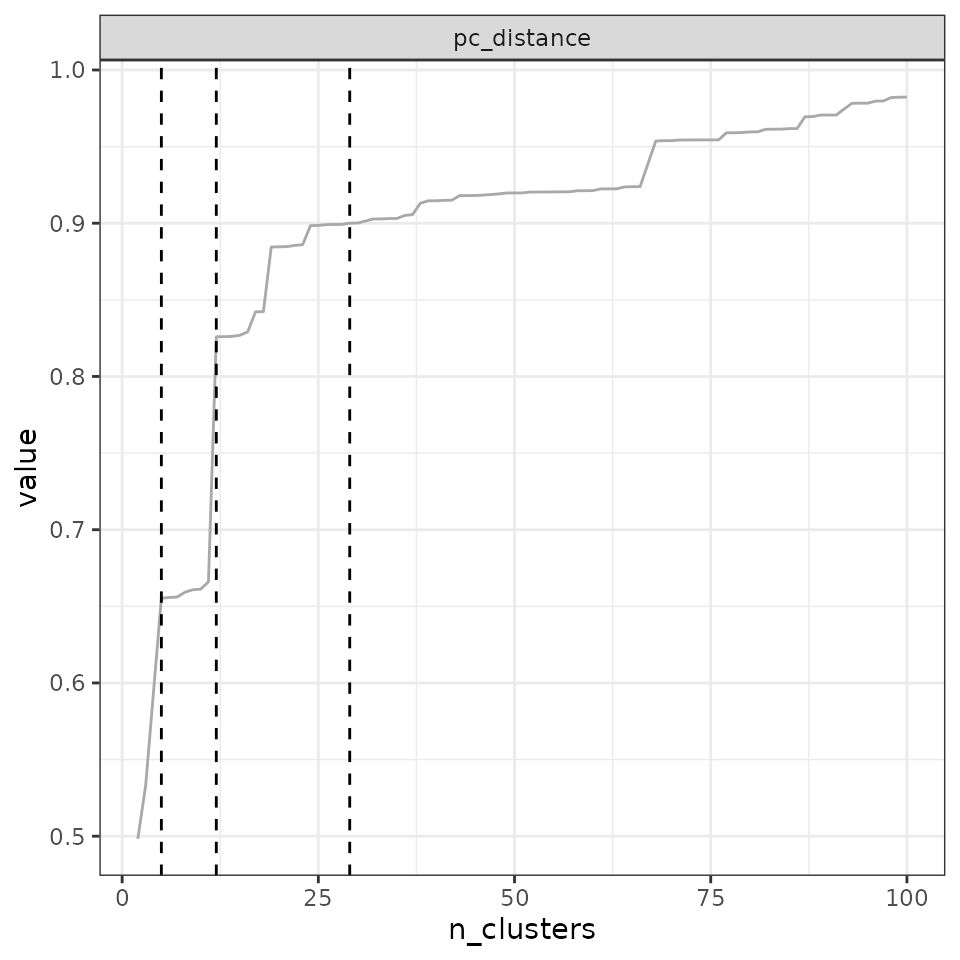

4.1 Hierarchical clustering
Boris Leroy, Maxime Lenormand and Pierre Denelle
2024-12-16
Source:vignettes/a4_1_hierarchical_clustering.Rmd
a4_1_hierarchical_clustering.RmdHierarchical clustering consists in creating a hierarchical tree from a matrix of distances (or beta-diversities). From this hierarchical tree, clusters can be obtained by cutting the tree.
Although these methods are conceptually simple, their implementation
can be complex and requires important user decisions. Here, we provide a
step-by-step guide to performing hierarchical clustering analyses with
bioregion, along with comments on the philosophy on how we
designed the functions.
Hierarchical clustering takes place on the right-hand side of the
bioregion conceptual diagram:
1. Compute dissimilarity indices from input data
To initiate the hierarchical clustering procedure, you need to
provide pairwise distances between sites. These pairwise distances
between sites can be obtained by running dissimilarity() on
a species-site matrix, such as a presence-absence or an abundance
matrix.
In the example below, we use the vegetation dataset from the package to compute distance metrics.
library("bioregion")
# Work with the vegetation dataset we include in the package
data(vegemat)
# This is an abundance matrix where sites are in rows and species in columns
vegemat[1:10, 1:10]## Species
## Site 10001 10002 10003 10004 10005 10006 10007 10008 10009 10010
## 35 0 0 0 0 0 0 0 0 0 0
## 36 2 0 0 0 0 0 1 12 0 0
## 37 0 0 0 0 0 0 0 0 0 0
## 38 0 0 0 0 0 0 0 0 0 0
## 39 5 0 0 0 0 0 0 2 0 0
## 84 0 0 0 0 0 0 0 0 0 0
## 85 3 0 0 0 0 0 1 7 0 0
## 86 0 0 0 2 0 0 2 22 0 0
## 87 16 0 0 0 0 0 2 54 0 0
## 88 228 0 0 0 0 0 0 5 0 0We are going to compute the \(\beta_{sim}\) diversity metric, which is a presence-absence dissimilarity index. The formula is as follows: \(\beta_{sim} = min(b, c) / (a+min(b, c))\)
Where a is the number of species shared by both sites; b is the number of species occurring only in the first site; and c is the number of species only occurring only in the second site.
We typically choose this metric for bioregionalization, because it is the turnover component of the Sorensen index (Baselga, 2012) (in a nutshell, it tells us how sites are different because they have distinct species), and because it is less dependent on species richness than the Jaccard turnover (Leprieur & Oikonomou, 2014). Alternatively, given that we have abundance data here, we could also use the Bray-Curtis turnover index (Baselga, 2013). The choice of the distance metric is very important for the outcome of the clustering procedure, so we recommend that you choose carefully depending on your research question.
dissim <- dissimilarity(vegemat)
head(dissim)## Data.frame of dissimilarity between sites
## - Total number of sites: 715
## - Total number of species: 3697
## - Number of rows: 255255
## - Number of dissimilarity metrics: 1
##
##
## Site1 Site2 Simpson
## 2 35 36 0.02325581
## 3 35 37 0.03100775
## 4 35 38 0.05426357
## 5 35 39 0.05426357
## 6 35 84 0.72093023
## 7 35 85 0.08527132By default, only the Simpson index is computed, but other options are
available in the metric argument of dissimilarity().
Furthermore, users can also write down their own formula to compute any
index they want for in the argument formula, see
?dissimilarity().
We are now ready to start the hierarchical clustering procedure with
the object dissim we have just created. Alternatively, you
can also use other types of objects in hclu_hierarclust(),
such as a distance matrix object (class dist) or a
data.frame of your own crafting (make sure to read the
required format carefully in ?hclu_hierarclust).
2. Hierarchical clustering with basic parameters
Hierarchical clustering, and the associated hierarchical tree, can be constructed in two ways: - agglomerative, where all sites are initially assigned to their own bioregion and they are progressively grouped together - divisive, where all sites initially belong to the same unique bioregion and are then progressively divided into different bioregions
Subsections 2.1 to 2.3 detail the functioning of agglomerative hierarchical clustering, while sub-section 2.4. illustrates the divisive method.
2.1 Basic usage
The basic use of the function is as follows:
tree1 <- hclu_hierarclust(dissim)## Building the iterative hierarchical consensus tree... Note that this process can take time especially if you have a lot of sites.##
## Final tree has a 0.6863 cophenetic correlation coefficient with the initial dissimilarity
## matrixThe function gives us some information as it proceeds. Notably, it talks about a randomization of the dissimilarity matrix - this is a very important feature because hierarchical clustering is strongly influenced by the order of the sites in the distance matrix. Therefore, by default, the function performs a randomization of the order of sites in the distance matrix with 30 trials (more information in the randomization section). It also tells us that among all the trials selected the tree with the highest cophenetic correlation coefficient, with a value of 0.69.
We can see type the name of the object in the console to see more information:
tree1## Clustering results for algorithm : hclu_hierarclust
## (hierarchical clustering based on a dissimilarity matrix)
## - Number of sites: 715
## - Name of dissimilarity metric: Simpson
## - Tree construction method: average
## - Randomization of the dissimilarity matrix: yes, number of trials 100
## - Method to compute the final tree: Iterative consensus hierarchical tree
## - Cophenetic correlation coefficient: 0.686
## Clustering procedure incomplete - no clusters yetThe last line tells us that the the clustering procedure is incomplete: the tree has been built, but it has not yet been cut - so there are no clusters in the object yet.
To cut the tree, we can use the cut_tree() function:
# Ask for 3 clusters
tree1 <- cut_tree(tree1,
n_clust = 3)## Determining the cut height to reach 3 groups...## --> 0.5625Here, we asked for 3 clusters, and the algorithm automatically finds the height at which 3 clusters are found (h = 0.562).
tree1## Clustering results for algorithm : hclu_hierarclust
## (hierarchical clustering based on a dissimilarity matrix)
## - Number of sites: 715
## - Name of dissimilarity metric: Simpson
## - Tree construction method: average
## - Randomization of the dissimilarity matrix: yes, number of trials 100
## - Method to compute the final tree: Iterative consensus hierarchical tree
## - Cophenetic correlation coefficient: 0.686
## - Number of clusters requested by the user: 3
## Clustering results:
## - Number of partitions: 1
## - Number of clusters: 3
## - Height of cut of the hierarchical tree: 0.562When we type again the name of the object in the console, it gives us the results of the clustering: we have
- 1 partition: a partition is a clustering result. We only cut the tree once, so we only have 1 partition at the moment
- 4 clusters: this is the number of clusters in the partition. We asked for 3, and we obtained 3, which is good. Sometimes, however, we cannot get the number of clusters we asked for - in which case the outcome will be indicated.
- a height of cut at 0.562: this is the height of cut at which we can obtain 4 clusters in our tree.
We can make a quick plot of our partitioned tree with
# We reduced the size of text labels with cex = .2, because there are too many sites
plot(tree1, cex = .2)
Let’s see how it looks like on a map:
## Linking to GEOS 3.12.1, GDAL 3.8.4, PROJ 9.4.0; sf_use_s2() is TRUE
map_bioregions(tree1$clusters[, c("ID", "K_3")], vegesf)Now, this is a hierarchical tree, and cutting it only once (= only 1 partition) oversimplifies the result of the tree. Why not cut it multiple times? For example, we could make deep, intermediate, and shallow cuts to the tree, likewise to Ficetola et al. (2017), which would allow us to see broad- to fine-scale relationships among sites in our tree.
We can specify, e.g. 4, 10 and 20 clusters:
## Determining the cut height to reach 2 groups...## --> 0.625## Determining the cut height to reach 3 groups...## --> 0.5625## Determining the cut height to reach 12 groups...## --> 0.4453125
plot(tree1, cex = .2) However, it may be more useful to choose the heights of cut, rather than
the number of clusters. We could, for example, cut the tree at heights
0.4 (shallow cut), 0.5 (intermediate cut) and 0.6 (deep cut):
However, it may be more useful to choose the heights of cut, rather than
the number of clusters. We could, for example, cut the tree at heights
0.4 (shallow cut), 0.5 (intermediate cut) and 0.6 (deep cut):

The plot is not easy to read because of the large number of sites. We can rather extract the information directly from the object:
tree1## Clustering results for algorithm : hclu_hierarclust
## (hierarchical clustering based on a dissimilarity matrix)
## - Number of sites: 715
## - Name of dissimilarity metric: Simpson
## - Tree construction method: average
## - Randomization of the dissimilarity matrix: yes, number of trials 100
## - Method to compute the final tree: Iterative consensus hierarchical tree
## - Cophenetic correlation coefficient: 0.686
## - Heights of cut requested by the user: 0.4 0.5 0.6
## Clustering results:
## - Number of partitions: 3
## - Partitions are not hierarchical
## - Number of clusters: 2 6 23
## - Height of cut of the hierarchical tree: 0.6 0.5 0.4From the result, we can read that for the deep cut partition (h = 0.6) we have clusters, for the intermediate cut partition (h = 0.5) we have 6 clusters and for the shallow cut partition (h = 0.4) we have 23 clusters.
Here is how the maps look like:
for(i in 2:ncol(tree1$clusters)){
map_bioregions(tree1$clusters[, c(1, i)], vegesf)
}

In the next section we will see what are the default settings and why we chose them, and then we will see how to find optimal numbers of clusters.
2.2 Exploring the outputs
To explore the object, you can use str() to see the
object structure:
str(tree1)## List of 6
## $ name : chr "hclu_hierarclust"
## $ args :List of 14
## ..$ index : chr "Simpson"
## ..$ method : chr "average"
## ..$ randomize : logi TRUE
## ..$ n_runs : num 100
## ..$ optimal_tree_method: chr "iterative_consensus_tree"
## ..$ keep_trials : logi FALSE
## ..$ n_clust : NULL
## ..$ cut_height : num [1:3] 0.4 0.5 0.6
## ..$ find_h : logi TRUE
## ..$ h_max : num 1
## ..$ h_min : num 0
## ..$ consensus_p : num 0.5
## ..$ verbose : logi TRUE
## ..$ dynamic_tree_cut : logi FALSE
## $ inputs :List of 7
## ..$ bipartite : logi FALSE
## ..$ weight : logi TRUE
## ..$ pairwise : logi TRUE
## ..$ pairwise_metric: chr "Simpson"
## ..$ dissimilarity : logi TRUE
## ..$ nb_sites : int 715
## ..$ hierarchical : logi FALSE
## $ algorithm :List of 6
## ..$ final.tree :List of 5
## .. ..- attr(*, "class")= chr "hclust"
## ..$ final.tree.coph.cor: num 0.686
## ..$ final.tree.msd : num 0.023
## ..$ trials : chr "Trials not stored in output"
## ..$ output_n_clust : Named int [1:3] 2 6 23
## .. ..- attr(*, "names")= chr [1:3] "h_0.6" "h_0.5" "h_0.4"
## ..$ output_cut_height : num [1:3] 0.6 0.5 0.4
## $ clusters :'data.frame': 715 obs. of 4 variables:
## ..$ ID : chr [1:715] "1003" "1004" "1005" "1006" ...
## ..$ K_2 : chr [1:715] "1" "1" "1" "1" ...
## ..$ K_6 : chr [1:715] "1" "1" "1" "1" ...
## ..$ K_23: chr [1:715] "1" "1" "1" "1" ...
## $ cluster_info:'data.frame': 3 obs. of 3 variables:
## ..$ partition_name : chr [1:3] "K_2" "K_6" "K_23"
## ..$ n_clust : int [1:3] 2 6 23
## ..$ requested_cut_height: num [1:3] 0.6 0.5 0.4
## - attr(*, "class")= chr [1:2] "bioregion.clusters" "list"It show you the different slots in the object, and how you can access
them. For example, if I want to access the clusters slot, I
have to type tree1$clusters.
- name: the name of the method we are using
- args: the arguments you have selected for your tree
- inputs: this is mostly for internal use in the package, it provides some info about the nature of input data and methods
-
algorithm: this slot contains detailed information
about the hierarchical clustering. For example, you can have access to
the raw tree here, in
hclustformat. To access it, I can typetree1$algorithm$final.tree -
clusters: this is a
data.framecontaining your partitions. The first column is your sites, and all the other columns are the partitions. -
cluster_info: this is a small
data.framewhich will help you link your requests with theclustersdata.frame. Its content varies depending on your choices; for example, in my case, it looks like this:
tree1$cluster_info## partition_name n_clust requested_cut_height
## h_0.6 K_2 2 0.6
## h_0.5 K_6 6 0.5
## h_0.4 K_23 23 0.4It shows the name of the partition (corresponding to column names in
tree1$clusters), the number of clusters in each partition,
and the cut height I initially requested.
2.3 Explanation of the default settings and how to change them
2.3.1 Randomization of the distance matrix
The order of sites in the distance matrix influences the outcome of the hierarchical tree. Let’s see that with an example:
# Compute the tree without randomizing the distance matrix
tree2 <- hclu_hierarclust(dissim,
randomize = FALSE)## Output tree has a 0.6849 cophenetic correlation coefficient with the initial
## dissimilarity matrix
plot(tree2, cex = .1)
This is how the tree looks like when the matrix is not randomized. Now let’s randomize it and regenerate the tree:
# This line randomizes the order of rows in the distance matrix
dissim_random <- dissim[sample(1:nrow(dissim)), ]
# Recompute the tree
tree3 <- hclu_hierarclust(dissim_random,
randomize = FALSE)## Output tree has a 0.6778 cophenetic correlation coefficient with the initial
## dissimilarity matrix
plot(tree3, cex = .1)
See how the tree looks different? This is problematic because it means that the outcome is heavily influenced by the order of sites in the distance matrix.
To address this issue, we have developed an iterative algorithm that
will reconstruct the entire tree from top to bottom, by selecting for
each branch a majority decision among multiple randomizations of the
distance matrix (100 times by default, can be increased). This method is
called Iterative Hierarchical Consensus Tree (argument
optimal_tree_method = "iterative_consensus_tree", default
value) and it ensures that you obtain a consensus tree that it will find
a majority decision for each branch of the tree. The tree produced with
this method generally have a better topology than any individual tree.
We estimate the performance of the topology with the cophenetic
correlation coefficient, which is the correlation between
the initial distance \(\beta_{sim}\)
among sites and the cophenetic distance, which is the
distance at which sites are connected in the tree. It tells us how
representative is the tree of the initial distance matrix.
Although this method performs better than any other available method,
it comes with a computing cost: it needs to randomize the distance
matrix multiple times for each branching of the tree. Therefore, we
recommend using it to obtain a robust tree - be patient in that case.
Otherwise, if you only need a very fast look at a good tree,
you can simply select the single best tree among multiple randomization
trials. It will never be as good as the Iterative Hierarchical
Consensus Tree, but it will be a best choice for a fast
exploration. To do that, choose
optimal_tree_method = "best". It will select the tree that
best represents the distance matrix; i.e., the one that has the highest
cophenetic correlation coefficient among all trials.
Let’s see an example of optimal_tree_method = "best". We
can also ask the function to keep all individual trees for further
exploration (keep_trials = TRUE).
tree_best <- hclu_hierarclust(dissim_random,
randomize = TRUE,
optimal_tree_method = "best",
keep_trials = TRUE)## Randomizing the dissimilarity matrix with 100 trials## -- range of cophenetic correlation coefficients among trials: 0.6669 - 0.6974##
## Final tree has a 0.6974 cophenetic correlation coefficient with the initial dissimilarity
## matrixAnother possible approach is to build a simple consensus tree among all the trials. However, we generally do not recommend constructing a consensus tree, because the topology of simple consensus trees can be very problematic if there are a lot of ties in the distance matrix. Let’s see it in action here:
tree_consensus <- hclu_hierarclust(dissim_random,
randomize = TRUE,
optimal_tree_method = "consensus",
keep_trials = TRUE)## Randomizing the dissimilarity matrix with 100 trials##
## Final tree has a 0.202 cophenetic correlation coefficient with the initial dissimilarity
## matrixSee how the cophenetic correlation coefficient for the consensus tree is terrible compared to the IHCT and best tree ?
This consensus tree has almost no correlation with our initial distance matrix. This is because its topology is terribly wrong, see how the tree looks like:
plot(tree_consensus)
Booo, this is just a large rake, not a tree!!!
2.3.2 Tree construction algorithm
By default, the function uses the UPGMA method (Unweighted Pair Group
Method with Arithmetic Mean) because it has been recommended in
bioregionalization for its better performance over other approaches
(Kreft & Jetz, 2010). You can change
this method by changing the argument method; all methods
implemented in stats::hclust() are available.
Note that the current height distances for methods
method = "ward.D" and method = "ward.D2" may
differ from the calculations in stats::hclust(), due to the
iterative nature of the algorithm. In addition, using the method
method = "single" are much slower than the other
approaches, and we have not yet implemented a workaround to make it
faster (do not hesitate to contact us if you need a faster
implementation or have an idea of how to make it run faster).
2.3.3 Cutting the tree
There are three ways of cutting the tree:
-
Specify the expected number of clusters: you can
request a specific number of clusters (
n_clust = 5for example). You can also request multiple partitions, each with their own number of clusters (n_clust = c(5, 10, 15)) for example.
Note: When you specify the number of clusters, the
function will search for the associated height of cut automatically; you
can disable this parameter with find_h = FALSE. It will
search for this h value between h_max (default 1)
and h_min (default 0). These arguments can be adjusted if
you are working with indices whose values do not range between 0 and
1.
Specify the height of cut: you can request the height at which you want to cut the tree (e.g.,
cut_height = 0.5). You can also request multiple partitions, each with their own cut height (cut_height = c(0.4, 0.5, 0.6)) for example.Use a dynamic tree cut method: Rather than cutting the entire tree at once, this alternative approach consists in cutting individual branches at different heights. This method can be requested by using
dynamic_tree_cut = TRUE, and is based on the dynamicTreeCut R package.
2.4. Divisive clustering
While the agglomerative hierarchical clustering in the previous subsections followed a bottom-up approach, divisive clustering follows a top-down approach. This means that in the first step of the clustering, all sites belong to the same bioregion, and then sites are iteratively divided into different bioregions until all sites belong to a unique bioregion.
Divisive clustering is following the DIvisive ANAlysis (DIANA) clustering algorithm described in (Kaufman & Rousseeuw, 2009).
At each step, the algorithm splits the largest cluster by identifying the most dissimilar observation (i.e. site) and then putting sites that are closer to this most dissimilar observation than to the ‘old party’ group into a splinter group. The result is that the large cluster is split into two clusters.
The function hclu_diana performs the Diana divisive
clustering.
# Compute the tree with the Diana algorithm
tree_diana <- hclu_diana(dissim)## Output tree has a 0.41 cophenetic correlation coefficient with the initial
## dissimilarity matrix
plot(tree_diana)
3. How to find an optimal number of clusters?

Step 1. Build a tree with
hclu_hierarclust()Step 2. Explore a range of partitions, from a minimum (e.g., starting at 2 clusters) up to a maximum (e.g. \(n-1\) clusters where \(n\) is the number of sites).
Step 3. Calculate one or several metrics for each partition, to be used as the basis for evaluation plots.
Step 4. Search for one or several optimal number(s) of clusters using evaluation plots. Different criteria can be applied to identify the optimal number(s) of clusters.
Step 5. Export the optimal partitions from your cluster object.
3.1 A practical example
In this example we will compute the evaluation metric used by Holt et al. (2013), which compares the total dissimilarity of the distance matrix (sum of all distances) with the inter-cluster dissimilarity (sum of distances between clusters). Then we will choose the optimal number of clusters as the elbow of the evaluation plot.
data(vegemat)
# Calculate dissimilarities
dissim <- dissimilarity(vegemat)
# Step 1 & 2. Compute the tree and cut it into many different partitions
tree4 <- hclu_hierarclust(dissim,
n_clust = 2:100)## Building the iterative hierarchical consensus tree... Note that this process can take time especially if you have a lot of sites.##
## Final tree has a 0.6842 cophenetic correlation coefficient with the initial dissimilarity
## matrix## Warning in cut_tree(outputs, n_clust = n_clust, cut_height = cut_height, : The requested number of cluster could not be found
## for k = 4. Closest number found: 5## Warning in cut_tree(outputs, n_clust = n_clust, cut_height = cut_height, : The requested number of cluster could not be found
## for k = 67. Closest number found: 66
# Step 3. Calculate the same evaluation metric as Holt et al. 2013
eval_tree4 <- bioregionalization_metrics(
tree4,
dissimilarity = dissim, # Provide distances to compute the metrics
eval_metric = "pc_distance")## Computing similarity-based metrics...## - pc_distance OK
# Step 4. Find the optimal number of clusters
opti_n_tree4 <- find_optimal_n(eval_tree4)## [1] "pc_distance"## Number of partitions: 99## Searching for potential optimal number(s) of clusters based on the elbow method## * elbow found at:## pc_distance 19## Plotting results...
opti_n_tree4## Search for an optimal number of clusters:
## - 99 partition(s) evaluated
## - Range of clusters explored: from 2 to 100
## - Evaluated metric(s): pc_distance
##
## Potential optimal partition(s):
## - Criterion chosen to optimise the number of clusters: elbow
## - Optimal partition(s) of clusters for each metric:
## pc_distance - 19
# Step 5. Extract the optimal number of clusters
# We get the name of the correct partition in the next line
K_name <- opti_n_tree4$evaluation_df$K[opti_n_tree4$evaluation_df$optimal_n_pc_distance]
# Look at the site-cluster table
head(tree4$clusters[, c("ID", K_name)])## ID K_19
## 1003 1003 1
## 1004 1004 1
## 1005 1005 1
## 1006 1006 1
## 1007 1007 1
## 1008 1008 1
# Make a map of the clusters
data("vegesf")
library("sf")
map_bioregions(tree4$clusters[, c("ID", K_name)], vegesf)
Or if you are allergic to lines of code, you could also simply recut
your tree at the identified optimal number of cut-offs with
cut_tree().
3.2 Evaluation metrics
Currently, there are four evaluation metrics available in the package:
pc_distance: \(\sum{between-cluster\beta_{sim }} / \sum{\beta_{sim}}\) This metric is the metric computed in Holt et al. (2013).anosim: this the statistic used in Analysis of Similarities, as suggested in Castro-Insua et al. (2018). It compares the between-cluster dissimilarities to the within-cluster dissimilarities. It is based on the difference of mean ranks between groups and within groups with the following formula: \(R=(r_B-r_W)/(N(N-1)/4)\) where \(r_B\) and \(r_W\) are the average ranks between and within clusters respectively, and \(N\) is the total number of sites.avg_endemism: it is the average percentage of endemism in clusters (Kreft & Jetz, 2010). It is calculated as follows: \(End_{mean} = \frac{\sum_{i=1}^K E_i / S_i}{K}\) where \(E_i\) is the number of endemic species in cluster \(i\), \(S_i\) is the number of species in cluster \(i\), and \(K\) the maximum number of clusters.tot_endemism: it is the total endemism across all clusters (Kreft & Jetz, 2010). It is calculated as follows: \(End_{tot} = E / C\) where \(E\) is the total number of endemic species (i.e., species occurring in only one cluster) and \(C\) is the number of non- endemic species.
Important note
To be able to calculate pc_distance and
anosim, you need to provide your dissimilarity object to
the argument dissimilarity. In addition, to be able to
calculate avg_endemism and tot_endemism, you
need to provide your species-site network to the argument
net (don’t panick if you only have a species x site matrix!
We have a function to make the conversion).
Let’s see that in practice. Depending on the size of your dataset, computing endemism-based metrics can take a while.
# Calculate pc_distance and anosim
bioregionalization_metrics(tree4,
dissimilarity = dissim,
eval_metric = c("pc_distance", "anosim"))## Computing similarity-based metrics...## - pc_distance OK## - anosim OK## Partition metrics:
## - 99 partition(s) evaluated
## - Range of clusters explored: from 2 to 100
## - Requested metric(s): pc_distance anosim
## - Metric summary:
## pc_distance anosim
## Min 0.4982831 0.6968281
## Mean 0.8950634 0.8029604
## Max 0.9823024 0.8669999
##
## Access the data.frame of metrics with your_object$evaluation_df
# Calculate avg_endemism and tot_endemism
# I have an abundance matrix, I need to convert it into network format first:
vegenet <- mat_to_net(vegemat)
bioregionalization_metrics(tree4,
net = vegenet,
eval_metric = c("avg_endemism", "tot_endemism"))## Computing composition-based metrics...## - avg_endemism OK## - tot_endemism OK## Partition metrics:
## - 99 partition(s) evaluated
## - Range of clusters explored: from 2 to 100
## - Requested metric(s): avg_endemism tot_endemism
## - Metric summary:
## avg_endemism tot_endemism
## Min 0.001177433 0.04895862
## Mean 0.008144637 0.08297200
## Max 0.181513150 0.31539086
##
## Access the data.frame of metrics with your_object$evaluation_df
## Details of endemism % for each partition are available in
## your_object$endemism_results3.2 Criteria to choose an optimal number of clusters
Choosing the optimal number of clusters is a long-standing issue in the literature, and there is no absolute and objective answer to this question. A plethora of methods have been proposed over the years, and the best approach to tackle this issue is probably to compare the results of multiple approaches to make an informed decision.
In the bioregion package, we have implemented several
methods that are specifically suited for bioregionalization
analysis.
For example, a standard criterion used for identifying the optimal
number of clusters is the elbow method, which is the
default criterion in find_optimal_n(). However, we
recommend moving beyond the paradigm of a single optimal number of
clusters, which is likely an oversimplification of the hierarchy of the
tree. We recommend considering multiple cuts of the tree, and we provide
several methods for doing so: identifying large steps in the
curve or using multiple cutoffs. Additionally,
we implement other approaches, such as using the maximum or minimum
value of the metrics, or by finding break points in the curve with a
segmented model.
Before we look at these different methods, we will compute all the
evaluation metrics and store them in eval_tree4:
vegenet <- mat_to_net(vegemat)
eval_tree4 <- bioregionalization_metrics(tree4,
dissimilarity = dissim,
net = vegenet,
eval_metric = c("pc_distance", "anosim",
"avg_endemism", "tot_endemism"))## Computing similarity-based metrics...## - pc_distance OK## - anosim OK## Computing composition-based metrics...## - avg_endemism OK## - tot_endemism OK3.2.1 Elbow method
The elbow method consists in find the ‘elbow’ in the form of the metric-cluster relationship. This method will typically work for metrics which have an L-shaped form (typically, pc_distance and endemism metrics), but not for other metrics (e.g. the form of anosim does not necessarily follow an L-shape).
The rationale behind the elbow method is to find a cutoff above which the metric values stop increasing significantly, such that adding new clusters does not provide much significant improvement in the metric.
The elbow method is the default method in
find_optimal_n(). There are no parameters to adjust it. If
the curve is not elbow-shaped, it may give spurious results.
find_optimal_n(eval_tree4)## [1] "pc_distance" "anosim" "avg_endemism" "tot_endemism"## Number of partitions: 99## Searching for potential optimal number(s) of clusters based on the elbow method## * elbow found at:## pc_distance 19
## anosim 24
## avg_endemism 9
## tot_endemism 12## Warning in find_optimal_n(eval_tree4): The elbow method is likely not suitable
## for the ANOSIM metric. You should rather look for leaps in the curve (see
## criterion = 'increasing_step' or decreasing_step)## Plotting results...
## Search for an optimal number of clusters:
## - 99 partition(s) evaluated
## - Range of clusters explored: from 2 to 100
## - Evaluated metric(s): pc_distance anosim avg_endemism tot_endemism
##
## Potential optimal partition(s):
## - Criterion chosen to optimise the number of clusters: elbow
## - Optimal partition(s) of clusters for each metric:
## pc_distance - 19
## anosim - 24
## avg_endemism - 9
## tot_endemism - 12## [1] "pc_distance" "anosim" "avg_endemism" "tot_endemism"
In our example above, the optimal number of clusters varies depending
on the metric, from a minimum of 9 to a maximum of 24. The final choice
depends on your metric preferences with respect to metrics, and your
objectives with the clustering. Alternatively, two cut-offs could be
used, a deep cut-off based on the endemism metrics e.g. at a value of 9,
and a shallow cutoff based on pc_distance, at 19.
3.2.2 Step method
The step method consists in identifying the largest “steps” in metrics, i.e., the largest increases or decreases in the value of the metric.
To do this, the function calculates all successive differences in
metrics between partitions. It will then keep only the largest positive
differences (increasing_step) or negative differences
(decreasing_step). increasing_step is for
increasing metrics (pc_distance) and
decreasing_step is for decreasing metrics
(avg_endemism and tot_endemism).
anosim values can either increase or decrease depending on
your dataset, so you would have to explore both ways.
By default, the function selects the top 1% steps:
find_optimal_n(eval_tree4,
metrics_to_use = c("anosim", "pc_distance"),
criterion = "increasing_step")## [1] "anosim" "pc_distance"## Number of partitions: 99## Searching for potential optimal number(s) of clusters based on the increasing_step method## - Step method## Plotting results...
## Search for an optimal number of clusters:
## - 99 partition(s) evaluated
## - Range of clusters explored: from 2 to 100
## - Evaluated metric(s): anosim pc_distance
##
## Potential optimal partition(s):
## - Criterion chosen to optimise the number of clusters: increasing_step
## (step quantile chosen: 0.99 (i.e., only the top 1 % increase in evaluation metrics are used as break points for the number of clusters)
## - Optimal partition(s) of clusters for each metric:
## anosim - 19
## pc_distance - 12
find_optimal_n(eval_tree4,
metrics_to_use = c("avg_endemism", "tot_endemism"),
criterion = "decreasing_step")## [1] "avg_endemism" "tot_endemism"## Number of partitions: 99## Searching for potential optimal number(s) of clusters based on the decreasing_step method## - Step method## Plotting results...
## Search for an optimal number of clusters:
## - 99 partition(s) evaluated
## - Range of clusters explored: from 2 to 100
## - Evaluated metric(s): avg_endemism tot_endemism
##
## Potential optimal partition(s):
## - Criterion chosen to optimise the number of clusters: decreasing_step
## (step quantile chosen: 0.99 (i.e., only the top 1 % decrease in evaluation metrics are used as break points for the number of clusters)
## - Optimal partition(s) of clusters for each metric:
## avg_endemism - 5
## tot_endemism - 5However, you can adjust it in two different ways. First, choose a
number of steps to select, e.g. to select the largest 3 steps, use
step_levels = 3:
find_optimal_n(eval_tree4,
metrics_to_use = c("anosim", "pc_distance"),
criterion = "increasing_step",
step_levels = 3)## [1] "anosim" "pc_distance"## Number of partitions: 99## Searching for potential optimal number(s) of clusters based on the increasing_step method## - Step method## Plotting results...
## Search for an optimal number of clusters:
## - 99 partition(s) evaluated
## - Range of clusters explored: from 2 to 100
## - Evaluated metric(s): anosim pc_distance
##
## Potential optimal partition(s):
## - Criterion chosen to optimise the number of clusters: increasing_step
## (step quantile chosen: 0.99 (i.e., only the top 1 % increase in evaluation metrics are used as break points for the number of clusters)
## - Optimal partition(s) of clusters for each metric:
## anosim - 5 12 19
## pc_distance - 5 12 19Note that these steps generally correspond to large jumps in the tree, which is why we like this approach as it fits well with the hierarchical nature of the tree.
Second, you can set a quantile of steps to select, e.g. to select the
5% largest steps set the quantile to 0.95
(step_quantile = 0.95):
find_optimal_n(eval_tree4,
metrics_to_use = c("anosim", "pc_distance"),
criterion = "increasing_step",
step_quantile = 0.95)## [1] "anosim" "pc_distance"## Number of partitions: 99## Searching for potential optimal number(s) of clusters based on the increasing_step method## - Step method## Plotting results...
## Search for an optimal number of clusters:
## - 99 partition(s) evaluated
## - Range of clusters explored: from 2 to 100
## - Evaluated metric(s): anosim pc_distance
##
## Potential optimal partition(s):
## - Criterion chosen to optimise the number of clusters: increasing_step
## (step quantile chosen: 0.95 (i.e., only the top 5 % increase in evaluation metrics are used as break points for the number of clusters)
## - Optimal partition(s) of clusters for each metric:
## anosim - 5 12 19 24 93
## pc_distance - 3 5 12 19 68Finally, a question that may arise is which cluster number to select when a large step occurs. For example, if the largest step occurs between partitions with 4 and 5 clusters, should we keep the partition with 4 clusters, or the partition with 5 clusters?
By default, the function keeps the partition with \(N + 1\) (5 clusters in our example above).
You can change this by setting
step_round_above = FALSE:
find_optimal_n(eval_tree4,
metrics_to_use = c("avg_endemism", "tot_endemism"),
criterion = "decreasing_step",
step_round_above = FALSE)## [1] "avg_endemism" "tot_endemism"## Number of partitions: 99## Searching for potential optimal number(s) of clusters based on the decreasing_step method## - Step method## Plotting results...
## Search for an optimal number of clusters:
## - 99 partition(s) evaluated
## - Range of clusters explored: from 2 to 100
## - Evaluated metric(s): avg_endemism tot_endemism
##
## Potential optimal partition(s):
## - Criterion chosen to optimise the number of clusters: decreasing_step
## (step quantile chosen: 0.99 (i.e., only the top 1 % decrease in evaluation metrics are used as break points for the number of clusters)
## - Optimal partition(s) of clusters for each metric:
## avg_endemism - 3
## tot_endemism - 33.2.3 Cutting at different cut-off values
The idea of this method is to select specific metric values at which
the number of clusters should be used. For example, in their study,
Holt et al. (2013) used different cutoffs
for pc_distance to find the global biogeographic regions:
0.90, 0.95, 0.99, 0.999. The higher the value, the more -diversity is
explained, but also the more clusters there are. Therefore, the choice
is a trade-off between the total -diversity explained and the number of
clusters.
Eventually, the choice of these values depends on different factors:
The geographic scope of your study. A global scale study can use large cutoffs like Holt et al. (2013) and end up with a reasonable number of clusters, whereas in regional to local scale studies with less endemism and more taxa shared among clusters, these values are too high, and other cutoffs should be explored, such as 0.5 and 0.75.
The characteristics of your study which will increase or decrease the degree of endemism among clusters: dispersal capacities of your taxonomic group, the connectivity/barriers in your study area, etc. Use lower cutoffs when you have a large number of widespread species, use higher cutoffs when you have high degrees of endemism.
Using abundance or phylogenetic data to compute -diversity metrics may allow you to better distinguish clusters, which in turn will allow you to use higher cutoffs.
For example, in our case, a regional-scale study on vegetation, we can use three cutoffs: 0.6 (deep cutoff), 0.8 (intermediate cutoff), and 0.9 (shallow cutoff).
find_optimal_n(eval_tree4,
metrics_to_use = "pc_distance",
criterion = "cutoff",
metric_cutoffs = c(.6, .8, .9))## [1] "pc_distance"## Number of partitions: 99## Searching for potential optimal number(s) of clusters based on the cutoff method## - Cutoff method## Plotting results...
## Search for an optimal number of clusters:
## - 99 partition(s) evaluated
## - Range of clusters explored: from 2 to 100
## - Evaluated metric(s): pc_distance
##
## Potential optimal partition(s):
## - Criterion chosen to optimise the number of clusters: cutoff
## --> cutoff(s) chosen: 0.6 0.8 0.9
## - Optimal partition(s) of clusters for each metric:
## pc_distance - 5 12 293.2.4 Cutting at the maximum or minimum metric value
This criterion finds the maximum (criterion = "max") or
minimum (criterion = "min") value of the metric in the list
of partitions and selects the corresponding partition. Such a criterion
can be interesting in the case of anosim, but is probably
much less useful for the other metrics implemented in the package.
3.2.5 Finding break points in the curve
This criterion consists in applying a segmented regression model with the formula evaluation metric ~ number of clusters. The user can define the number of breaks to be identified on the curve. Note that such a model is likely to require a minimum number of points to find an appropriate number of clusters. In our example here, we make 100 cuts in the tree to have enough values.
tree5 <- cut_tree(tree4,
cut_height = seq(0, max(tree4$algorithm$final.tree$height),
length = 100))
eval_tree5 <- bioregionalization_metrics(tree5,
dissimilarity = dissim,
net = vegenet,
eval_metric = c("pc_distance", "anosim",
"avg_endemism", "tot_endemism"))## Computing similarity-based metrics...## - pc_distance OK## - anosim OK## Computing composition-based metrics...## - avg_endemism OK## - tot_endemism OK
find_optimal_n(eval_tree5,
criterion = "breakpoints")## [1] "pc_distance" "anosim" "avg_endemism" "tot_endemism"## Number of partitions: 100## Searching for potential optimal number(s) of clusters based on the breakpoints method## Exact break point not in the list of partitions: finding the closest partition...## Plotting results...## (the red line is the prediction from the segmented regression)## Warning: Removed 1 row containing missing values or values outside the scale range
## (`geom_line()`).
## Search for an optimal number of clusters:
## - 100 partition(s) evaluated
## - Range of clusters explored: from 1 to 701
## - Evaluated metric(s): pc_distance anosim avg_endemism tot_endemism
##
## Potential optimal partition(s):
## - Criterion chosen to optimise the number of clusters: breakpoints
## - Optimal partition(s) of clusters for each metric:
## pc_distance - 16
## anosim - 111
## avg_endemism - 2
## tot_endemism - 2We can ask for a higher number of breaks:
- 2 breaks
find_optimal_n(eval_tree5,
criterion = "breakpoints",
n_breakpoints = 2)## [1] "pc_distance" "anosim" "avg_endemism" "tot_endemism"## Number of partitions: 100## Searching for potential optimal number(s) of clusters based on the breakpoints method## Exact break point not in the list of partitions: finding the closest partition...## Plotting results...## (the red line is the prediction from the segmented regression)## Warning: Removed 1 row containing missing values or values outside the scale range
## (`geom_line()`).
## Search for an optimal number of clusters:
## - 100 partition(s) evaluated
## - Range of clusters explored: from 1 to 701
## - Evaluated metric(s): pc_distance anosim avg_endemism tot_endemism
##
## Potential optimal partition(s):
## - Criterion chosen to optimise the number of clusters: breakpoints
## - Optimal partition(s) of clusters for each metric:
## pc_distance - 2 25
## anosim - 25 183
## avg_endemism - 2 16
## tot_endemism - 2 92- 3 breaks
find_optimal_n(eval_tree5,
criterion = "breakpoints",
n_breakpoints = 3)## [1] "pc_distance" "anosim" "avg_endemism" "tot_endemism"## Number of partitions: 100## Searching for potential optimal number(s) of clusters based on the breakpoints method## Exact break point not in the list of partitions: finding the closest partition...## Plotting results...## (the red line is the prediction from the segmented regression)## Warning: Removed 1 row containing missing values or values outside the scale range
## (`geom_line()`).
## Search for an optimal number of clusters:
## - 100 partition(s) evaluated
## - Range of clusters explored: from 1 to 701
## - Evaluated metric(s): pc_distance anosim avg_endemism tot_endemism
##
## Potential optimal partition(s):
## - Criterion chosen to optimise the number of clusters: breakpoints
## - Optimal partition(s) of clusters for each metric:
## pc_distance - 2 16 100
## anosim - 25 183 566
## avg_endemism - 2 13 56
## tot_endemism - 2 14 111Increasing the number of breaks can be useful in situations where you have, for example, non-linear silhouettes of metric ~ n clusters.
4. OPTICS as a semi-hierarchical clustering approach
OPTICS (Ordering Points To Identify the Clustering Structure) is a semi-hierarchical clustering approach that orders the points in the datasets so that the closest points become neighbors, calculates a ‘reachability’ distance between each point, and then extracts clusters from this reachability distance in a hierarchical manner. However, the hierarchical nature of clusters is not directly provided by the algorithm in a tree-like output. Hence, users should explore the ‘reachability plot’ to understand the hierarchical nature of their OPTICS clusters, and read the related publication to further understand this method (Hahsler et al., 2019).
To run the optics algorithm, use the hclu_optics()
function:
data(vegemat)
# Calculate dissimilarities
dissim <- dissimilarity(vegemat)
clust1 <- hclu_optics(dissim)
clust1## Clustering results for algorithm : hclu_optics
## - Number of sites: 715
## Clustering results:
## - Number of partitions: 1
## - Number of clusters: 9